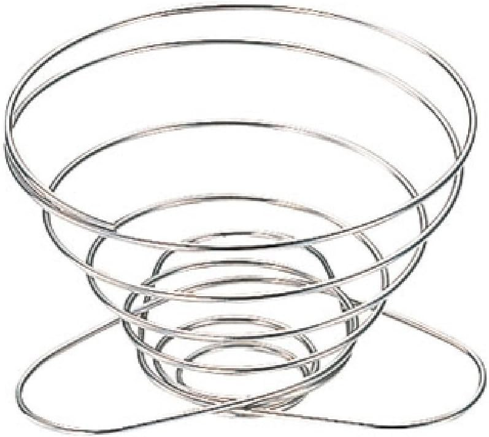
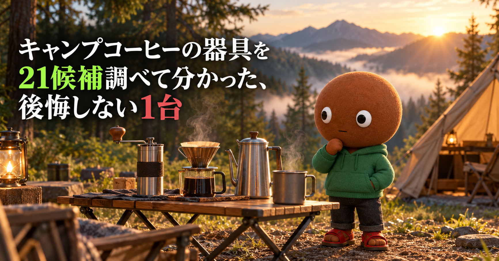
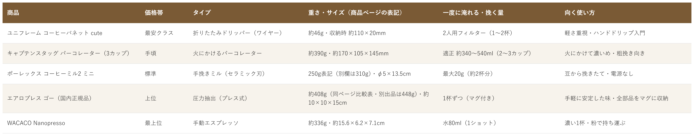

Amazonで見るキャンプでコーヒーを淹れたいけれど、器具が多すぎて選べない人へ
そのコーヒー器具、
軽さと味だけで
選んでいませんか？
折りたたみドリッパー・パーコレーター・手挽きミル・エアロプレス・携帯エスプレッソまで、キャンプコーヒーの器具21候補を調査。使い方が重複しない5商品を、向き不向きと低評価つきで比較しました。
自分に合うコーヒー器具を探す
この記事はAmazonアソシエイト・プログラムの参加者として、紹介料を得る場合があります（PR）。仕様は調査時点の情報です。
21候補から、使い方の違う5商品に絞りました。まずは気になる1つへ。向いている人・向いていない人と、低評価レビューもまとめています。
21候補を調査
5商品に厳選
低評価レビューも確認済み
結論から先に言うと：
軽さか、火にかけるか、挽きたてか、安定した味か、濃さか。何を優先するかで1つを。
横にスワイプして、5商品を見比べる
選び方の基準は3つ
調べてわかったのは、基準は3つでした。
1つ目は「どう淹れるか」。今回の5商品は、ペーパーフィルターでお湯を落とすドリッパー（ユニフレーム）、火にかけて循環させるパーコレーター（キャプテンスタッグ）、粉を押し出すエアロプレス ゴー、圧力をかけるNanopressoと、淹れ方が違います。味の好みと、手間をかけたいかどうかで選びます。
2つ目は「豆を挽くか、粉を持って行くか」。ポーレックスは豆を挽く道具で、単体ではコーヒーを淹れられません。ほかの4つは、粉を用意するのが前提です（パーコレーターは粗挽き、Nanopressoは細挽きの粉）。挽きたてにこだわるなら、ミルを足す必要があります。
3つ目は「重さと、一度に淹れる量」。重さは約46g（ユニフレーム）から約408g（エアロプレス ゴー）まで、約9倍の差がありました。淹れる量は、1杯ずつのもの（エアロプレス ゴーは1杯ずつ、Nanopressoは水80ml）から、約540ml（キャプテンスタッグ）まであります。ソロか、2〜3人かで選びます。
比較表

価格帯・タイプ・重さとサイズ・一度に淹れる量・向く使い方の比較（価格帯は、調査時点のAmazon出品価格の順に付けた目安です。価格は変動が大きく、商品ごとに差があります。重さとサイズは商品ページの表記です）
ユニフレーム コーヒーバネット cute
- 最安クラス
- 折りたたみドリッパー（ワイヤー）
- 約46g、収納時 約110×20mm
- 2人用フィルター（1〜2杯）
キャプテンスタッグ パーコレーター（3カップ）
- 手頃
- 火にかけるパーコレーター（3カップ）
- 約390g、約170×105×145mm
- 適正容量 約340〜540ml（2〜3カップ）
ポーレックス コーヒーミル2 ミニ
- 標準
- 手挽きミル（セラミック刃）
- 250g表記（別欄は310g）、φ5×高さ13.5cm
- 最大20g（約2杯分）、18段階
エアロプレス ゴー（国内正規品）
- 上位
- 圧力抽出（プレス式）
- 約408g（同じページの比較表と別出品は約448g）、約102×102×150mm
- 1杯ずつ、全部品をマグに収納
WACACO Nanopresso
- 最上位
- 手動エスプレッソ（粉専用）
- 約336g、約15.6×6.2×7.1cm
- 水80ml（1ショット）、最大18bar
向いてる人
- 荷物を軽く小さくしたい人（登山・バイク・ソロキャンプ）
- ペーパーフィルターで、ハンドドリップを手軽に始めたい人
- 洗ったあとに乾きが早い道具がほしい人（Amazonのレビューに、洗っても乾きが早いという声）
向いてない人
- 一度に何杯も淹れたい人（フィルターは2人用です）
- 豆を挽く道具や、お湯を注ぐ道具も一緒にそろえたい人（どちらも付きません）
- ペーパーフィルターが動くのが気になる人（Amazonのレビューに、豆とお湯が多いとずり下がるという声）
選ぶ決め手約46gで、収納時は厚さ約20mm。評価は4.5（883件）で、ドリッパーの中でいちばん件数の多い1台です。
低評価レビューを調べました
Amazonのレビューには、★3で、登山に持っていくのに良いが、豆とお湯が多いとペーパーフィルターがずり下がってくる、という投稿がありました。★4には、紙を通して直接外気に触れるので、最初の蒸らしの効果はどうかと思う（山で使うには十分）という投稿があります。個別の投稿の真偽までは確認できません。
参考：Amazon商品ページのレビュー（★3、★4）
ユニフレームのコーヒーバネット cuteは、
荷物を軽く小さくしたい人に
最適な1台です。
本体の重さは約46g、
収納時は約110×20mmです。
ペーパーフィルターは2人用です。
お湯と粉は、別に用意します。
向いてる人
- 火にかけて、濃いめのコーヒーを淹れたい人
- 道具を1つにして、お湯を沸かす用途にも使いたい人（レビューに、お茶や湯沸かしにも使えるという声）
- ペーパーフィルターを使わず、粉を直接入れて淹れたい人（円形フィルターを入れる使い方もレビューにあります）
向いてない人
- コーヒー粉が混ざるのが気になる人（getnaviは、挽き方が細かいとバスケットから粉が落ちて粉っぽくなると書いています）
- 抽出の時間や火加減を調整する手間をかけたくない人（getnaviは、コツをつかむまで少し時間がかかるとしています）
- 軽さを最優先にしたい人（約390gで、5商品の中では2番目に重いです）
選ぶ決め手評価は4.2（1,472件）で、5商品の中でいちばん件数が多く、価格帯も手頃です。マグカップ1杯から淹れられると、getnaviは紹介しています（商品ページの適正容量は約340〜540mlです）。
低評価レビューを調べました
Amazonのレビューには、★3で、あくまで雰囲気重視、という投稿がありました。★4には、熱いので火傷に注意して使う、という投稿があります。直火にかけるため、本体・取っ手・ふたが熱くなる点や、沸騰したときの吹きこぼれにも注意してください。getnaviの記事は、一般的なパーコレーターの注意点として、挽き方が細かいと粉っぽくなること、抽出に時間をかけ過ぎると、酸化で香りが失われて苦みや渋みが出ることを挙げています。個別の投稿の真偽までは確認できません。
参考：Amazon商品ページのレビュー（★3、★4）、getnavi
キャプテンスタッグのパーコレーターは、
火にかけて淹れたい人に
最適な1台です。
重さは約390g、
適正容量は約340〜540mlです。
粉は粗挽きがおすすめです。
抽出は火にかけたまま、
つまみから色を見て調整します。
向いてる人
- 豆を持って行って、外で挽きたてを淹れたい人
- 電源のない場所で使える、静かなミルがほしい人
- 分解して、洗って使いたい人（Amazonのレビューに、分解・組み立てがしやすいという声）
向いてない人
- 一度に何杯分も挽きたい人（最大20g、約2杯分です）
- 挽くときに手が疲れるのが気になる人（Amazonの同じ★4の投稿に、短時間でも本体を握る手が少し疲れるとありました。本人はマイナス評価とは思わないとしています）
- ドリッパーやお湯の道具もまとめてほしい人（挽く道具だけです）
選ぶ決め手評価は4.6（857件）で、5商品の中でいちばん高い評価です。2杯分を挽くのに1分半ほどだったというレビューがあります。
低評価レビューを調べました
Amazonのレビューには、★4で、初めて使ったとき、外側の刃に豆が食い込んだのか、セラミックにくぼみができて、そこに粉が詰まり、歯ブラシでも取れなかった（気にせず使っている、製品のばらつきかも）という投稿がありました。同じ★4の投稿には、短時間だが、豆を挽くときに本体を握る手が少し疲れる、ともありました（本人はマイナス評価とは思わないとしています）。個別の投稿の真偽までは確認できません。
参考：Amazon商品ページのレビュー（★4）
ポーレックスのコーヒーミル2 ミニは、
豆から挽きたい人に
最適な1台です。
一度に挽ける最大量は20g、
粒度は18段階です。
重さの表記は、
250gと310gの2つがあります。
購入前に確認してください。
向いてる人
- ドリップのコツがなくても、安定した味にしたい人
- 全部品をマグに収納して、荷物をまとめたい人
- 1杯ずつ、濃いめに淹れたい人（BE-PALは、濃く淹れてお湯で割れば、数人分もできるとしています）
向いてない人
- 洗い物の手間を減らしたい人（Amazonのレビューに、洗うのが面倒で、ペーパードリップの方が楽という声）
- 一度に何杯も淹れたい人（BE-PALは、一度に抽出できる量が少ないとしています）
- 届いた商品の状態が気になる人（Amazonのレビューに、傷や汚れがあったという投稿）
選ぶ決め手マグ、リッド、スクープ、パドル、ペーパーフィルターまで、全部が1つに収まります。国内正規品と書かれたページで、評価は4.2（59件）です。
低評価レビューを調べました
Amazonのレビューには、★3で、物は良いが、洗うのが面倒で、外出先で使うならドリップの方が楽なので使わなくなった、という投稿がありました。★1には、パッケージの中の商品に傷があり、髪の毛や粘着物が付いていたので返品した、という投稿があります（開封済みの返品物が販売されていたのではないか、という感想です）。別の★3には、フィルターを入れる小さなケースの一辺が割れて閉まらなくなっていたという海外の投稿もありました。個別の投稿の真偽までは確認できません。
参考：Amazon商品ページのレビュー（★1、★3）、BE-PAL
エアロプレス ゴーは、
1杯ずつ手軽に淹れたい人に
最適な1台です。
重さは約408g、
全部品をマグに収納できます。
同じページの比較表と別出品は、
重さの表記が約448gでした。
向いてる人
- 電源のない場所で、濃い1杯を飲みたい人
- カップや計量のスクープまで、1つにまとめたい人
- 手でポンプを押して淹れる作業を楽しめる人
向いてない人
- 何杯も続けて淹れたい人（OutdoorGearLabは、複数杯を淹れるのに時間がかかるとしています）
- 水が少ない場所で、掃除をしたい人（OutdoorGearLabは、水がないと掃除が難しいとしています）
- 価格を抑えたい人（5商品の中で最上位の価格帯です）
選ぶ決め手評価は4.5（1,278件）。圧力18barの手動で、約336gの1つに、カップとケースまで付きます。
低評価レビューを調べました
Amazonのレビューは、今回確認できた範囲では★5のみでした。海外のレビューサイトのOutdoorGearLabは、短所として、価格が高いこと、小さい部品が多いこと、掃除がやや大変なこと、複数杯を淹れるのに時間がかかること、使い終わった粉が出にくく、かき出す道具が必要なことを挙げています。また、Amazonの★5のレビューに、追加のフィルターバスケットを買いたいが、パーツ別売りの情報が見つからなかった、という声がありました。
参考：Amazon商品ページのレビュー、OutdoorGearLab
WACACOのNanopressoは、
電源なしで濃い1杯を飲みたい人に
最適な1台です。
重さは約336g、
水の容量は80mlです。
粉は、別に用意します。
掃除は水のある場所で、
しっかり洗います。
21候補をどう絞った？ 調査の経緯を見る
キャンプコーヒーの器具は、ドリッパー、パーコレーター、ミル、プレス式、エスプレッソ式と、淹れ方がまったく違うものが同じ棚に並びます。「豆を挽く道具を買ったのに、淹れる器具が足りなかった」「軽いと思ったら、洗うのが大変だった」というギャップが起きやすい分野で、正直どれを選べばいいのか迷います。
なので今回、キャンプやアウトドアでコーヒーを淹れる器具の仕様と評価を調べて比較しました。各商品ごとに、向いてる人・向いてない人も調べているので、自分に合う1つを探してみてください。
21候補から5つに絞り込みました
Amazonの検索結果と商品ページ、メーカー表記を紹介した記事を中心に調べました。今回はユニフレーム コーヒーバネット cute・スノーピーク フォールディングコーヒードリッパー 焚火台型・キャプテンスタッグ コーヒードリッパー UW-3508・ZAFIELD 折りたたみコーヒードリッパー・MUNIEQ Tetra Drip・キャンピングムーン SOLO DRIP・ハリオ V60 メタルドリッパー・キャプテンスタッグ パーコレーター・GSI ステンレス パーコレーター 3CUP・キャンピングムーン パーコレーター ケトル SW-7・ポーレックス コーヒーミル2 ミニ・TIMEMORE 栗子C3S・キャプテンスタッグ コーヒーミル UW-3501・ハリオ コーヒーミル セラミックスリム・KINGrinder P0・エアロプレス ゴー・エアロプレス オリジナル・WACACO Nanopresso・Cafflano Klassic・スノーピーク チタンカフェプレス・ハリオ V60 ドリップケトル ウッドの21候補を調べ、使い方が重複しないよう5商品に絞りました。21候補のうち、Amazonの商品ページで詳しい仕様を確認できたのは採用した5商品で、見送ったものは、検索結果の評価と件数、商品名の表記までの確認です。
採用したのは、ユニフレーム（折りたたみドリッパー）、キャプテンスタッグ（パーコレーター）、ポーレックス（手挽きミル）、エアロプレス ゴー（プレス式）、WACACO Nanopresso（手動エスプレッソ）の5つです。
見送ったのは、採用した商品と使い方が重なるものと、判断材料が足りないものです。ドリッパーの枠では、スノーピーク 焚火台型（評価4.4・637件）、MUNIEQ Tetra Drip（4.4・167件）、ハリオ V60 メタルドリッパー（4.4・526件）、ZAFIELD（4.0・526件）、キャンピングムーン SOLO DRIP（4.0・248件）、キャプテンスタッグ UW-3508（3.8・410件）が重なります。ユニフレームは評価4.5・883件と、件数が最も多く、約46gと軽かったため選びました。パーコレーターの枠では、GSI 3CUP（4.3・39件）とキャンピングムーン SW-7（4.5・5件）は、評価の件数が少なく、判断材料が足りませんでした。
ミルの枠では、TIMEMORE 栗子C3S（4.6・557件）、キャプテンスタッグ UW-3501（4.4・4,187件）、ハリオ セラミックスリム（4.2・約1.3万件）、KINGrinder P0（4.3・57件）が重なります。ポーレックスは、評価4.6・857件で、分解して刃を丸洗いできると書かれているため選びました。TIMEMOREは評価・件数ともに高い候補ですが、ミルの枠は1つに絞るため、今回は見送りました。
淹れ方の枠では、エアロプレス オリジナル（4.5・82件）は、ゴーと同じ淹れ方で、持ち運びを前提にするとゴーの方がキャンプに合うため見送りました。Cafflano Klassic（4.2・667件）は、ミルとドリッパーを一体にした1台で、ミル・ドリッパーの枠と重なるため外しました。スノーピーク チタンカフェプレス（4.3）は、フレンチプレス式で、エアロプレスと淹れ方の枠が重なります。ハリオ V60 ドリップケトルは、お湯を注ぐ道具で、コーヒーを淹れる器具の比較からは外しました。
低評価の商品も見ました
5商品それぞれについて、Amazon商品ページに載っているレビューを確認しました。Amazonの低評価だけを絞り込む画面は、ログインが必要なため見られず、商品ページに表示されたレビューの範囲での確認です。個別レビューの真偽までは検証できないため、確認できた範囲の傾向としてまとめています。ネット検索では、日本語で各商品の低評価を独立して検証した記事までは見つかりませんでした（Nanopressoだけ、海外のレビューサイトの記事がありました）。
確認できた指摘は、ユニフレームのペーパーフィルターがずり下がる点（1件）、キャプテンスタッグの「雰囲気重視」という感想と火傷への注意（各1件）、ポーレックスの刃のくぼみに粉が詰まった点と手の疲れ（同じ★4の投稿1件）、エアロプレス ゴーの洗う手間と、届いた商品の傷・汚れ（各1件）です。Nanopressoは、Amazonのレビューで★5のみ確認でき、海外のレビューサイトの短所を載せています。
調べてみて驚いたこと
調査中、同じ商品なのに、重さの数字が食い違うものがあって驚きました。ポーレックスは、説明欄で250g、別の欄で310gと書かれていました。エアロプレス ゴーは、国内正規品のページの箇条書きが約408g、同じページの比較表と別出品が約448gで、サイズの数字も違いました。購入前に、商品ページの数字が複数ないかを確認するのが安全です。
もう1つ驚いたのは、5つとも、1つでコーヒーが完結しないことです。ポーレックスは挽くだけで、ユニフレームはお湯と粉が別に必要です。パーコレーターとNanopressoも、お湯と粉を用意します。「器具を1つ買えば飲める」とは限らず、足りないものが商品ごとに違います。
さらに、重さでは、ユニフレームの約46gとエアロプレス ゴーの約408gで、約9倍の差がありました。この記事では金額を載せず、相対的な目安で示しています。購入前に、Amazonの販売元と価格を確認してください。
つまり、軽さや味の好みより、お湯と粉を何で用意して、何杯分を、どう洗うかを先に決めて選ぶのが大事だと分かりました。
迷ったらこれ
ここまで読んでも迷ったら、荷物を増やさず、最初の1つとして試しやすい、ユニフレーム コーヒーバネット cuteが、一番外しにくいと考えます（評価は4.5、883件、約46g）。お湯と粉は別に用意が必要です。マグとペーパーフィルターまで1つにまとめたいなら、エアロプレス ゴーも選択肢です。
Amazonで見る→よくある質問
Q. キャンプでコーヒーを淹れるのに、最低限そろえるものは何ですか。
A. 今回の5商品は、どれもお湯と粉を別に用意します。ユニフレームはペーパーフィルター10枚付き（カップは別）、エアロプレス ゴーはマグとペーパーフィルター付き、Nanopressoはカップ付きで粉専用です。パーコレーターは粉を直接入れて火にかけ、ミルは豆を挽くだけです。
Q. パーコレーターで、粉が混ざらないようにするには。
A. getnaviは、挽き方が細かいとバスケットから粉が落ちて粉っぽくなるため、粗めに挽くよう勧めています。Amazonのレビューには、約80mmの円形ペーパーフィルター（中央に穴があるもの）がほぼ合うので、粉混じりを抑えられるという投稿がありました。
Q. 水が少ないキャンプ場でも使えますか。
A. 洗い物の水が少ない場合、掃除の手間が違います。ユニフレームはペーパーフィルターごと捨てられます。OutdoorGearLabは、Nanopressoは水がないと掃除が難しいとしています。エアロプレス ゴーは、Amazonのレビューに、洗うのが面倒でドリップの方が楽という投稿がありました。商品ページでは、使用済みのコーヒー粉とフィルターは一押しで捨てられ、後片付けは簡単と書かれています。
Q. 豆を挽く道具は必要ですか。
A. 粉を買って持って行くなら、ミルは要りません。豆から挽きたい場合は、ポーレックスのような手挽きミルが要ります。ポーレックスは、一度に最大20g（約2杯分）です。パーコレーターは粗挽き、Nanopressoは細挽きの粉と、淹れ方で挽き方が違う点にも注意してください。
こんな記事も書いてます
ミートボーの調査部屋で他の記事も見る（全本）ミートボーの調査で他の記事も見る（全本）


この記事はAmazonアソシエイト・プログラムの参加者として、紹介料を得る場合があります（PR）。
出典
- getnavi キャンプに持って行きたいおすすめパーコレーター5選（粉混じり・粗挽き・抽出のコツ）：getnavi.jp
- BE-PAL エアロプレスゴーのレビュー（コンパクトで抽出量が少ない点・全部品を収納）：bepal.net
- OutdoorGearLab WACACO Nanopresso（短所・掃除・複数杯の手間）：outdoorgearlab.com
- Amazon.co.jp ユニフレーム コーヒーバネット cute：amazon.co.jp
- Amazon.co.jp キャプテンスタッグ パーコレーター（3カップ）：amazon.co.jp
- Amazon.co.jp ポーレックス コーヒーミル2 ミニ：amazon.co.jp
- Amazon.co.jp エアロプレス ゴー（国内正規品）：amazon.co.jp
- Amazon.co.jp WACACO Nanopresso（ケース付き）：amazon.co.jp